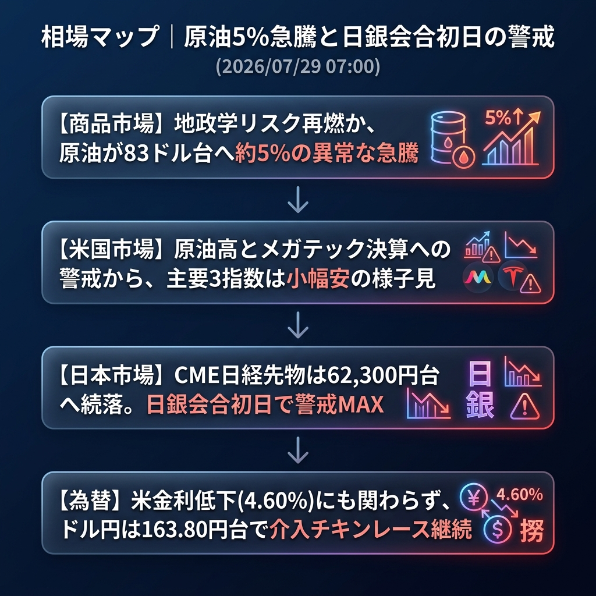

今朝の最大のサプライズは「原油の5%近い異常な急騰（83ドル台へ）」です。米国市場はメガテック決算と原油高への警戒から主要3指数が揃って小幅安となり様子見ムード。一方、いよいよ本日スタートする日銀金融政策決定会合を前に、CME日経先物は62,330円へと続落しており、日本市場は極度の緊張状態に包まれています。
「原油急騰によるインフレ再燃リスク」と「日銀会合初日の警戒感」。
NY時間に入ってから原油（WTI）が一気に急伸し、79ドル台から83ドル台へ到達しました。中東の地政学リスク再燃か、あるいは大規模な在庫取り崩しが意識されたものとみられます。この影響で米国債利回りは4.60%へ低下したにも関わらず、インフレ懸念が再浮上し、米国株はナスダック（-0.09%）やダウ（-0.15%）など総じて上値の重い展開で引けました。
為替市場では、米金利が低下したにも関わらずドル円は163.80円台を高止まりしており、介入へのチキンレースが続いています。
| 指数・銘柄 | 現在値 | 前回比（前日比） | 騰落率 | 確認事項 |
|---|---|---|---|---|
| S&P 500 (ES=F) | 7,456.25 | -9.00 | -0.12% | 決算前で様子見 |
| Nasdaq (NQ=F) | 27,896.75 | -25.25 | -0.09% | テック株は方向感なし |
| Dow (YM=F) | 52,862.0 | -82.0 | -0.15% | 原油高も全体相場を押し上げず |
| 日経225現物 | 62,364.92 | 0.00 | 0.00% | 前日大引け値 |
| CME日経225先物 | 62,330.0 | -215.0 | -0.34% | 日銀警戒で一段安 |
| USD/JPY | 163.862 | +0.160 | +0.10% | 米金利低下も163.80円台を維持 |
| EUR/USD | 1.1388 | +0.0013 | +0.11% | 小幅なユーロ高ドル安 |
| 金 | 4,016.0 | -22.7 | -0.56% | ドルインデックス底堅く軟調 |
| 原油 | 83.07 | +3.81 | +4.81% | 【急騰】地政学リスク再燃の兆候 |
| BTCUSD | 63,784.45 | +77.79 | +0.12% | 63,000ドル台後半へ小反発 |
本日より日銀金融政策決定会合がスタートします。昨日の大暴落（-2,500円超）を引き起こした「追加利上げ恐怖」が市場を支配しており、東京時間は極めて神経質な展開が予想されます。
また、原油高によるインフレ懸念が日本企業のコスト増として嫌気される可能性もあります。ドル円は164円に肉薄しており、日銀会合中の「不意打ち介入」にも最大限の警戒が必要です。
日銀から「今回は利上げを見送る」あるいは「国債減額はごく小規模にとどめる」といったハト派的な観測報道（リーク）が東京時間に出た場合。その瞬間、日経平均は強烈なショートカバーで急反発し、ドル円は164円を突破して一気に円安が進むシナリオとなります。